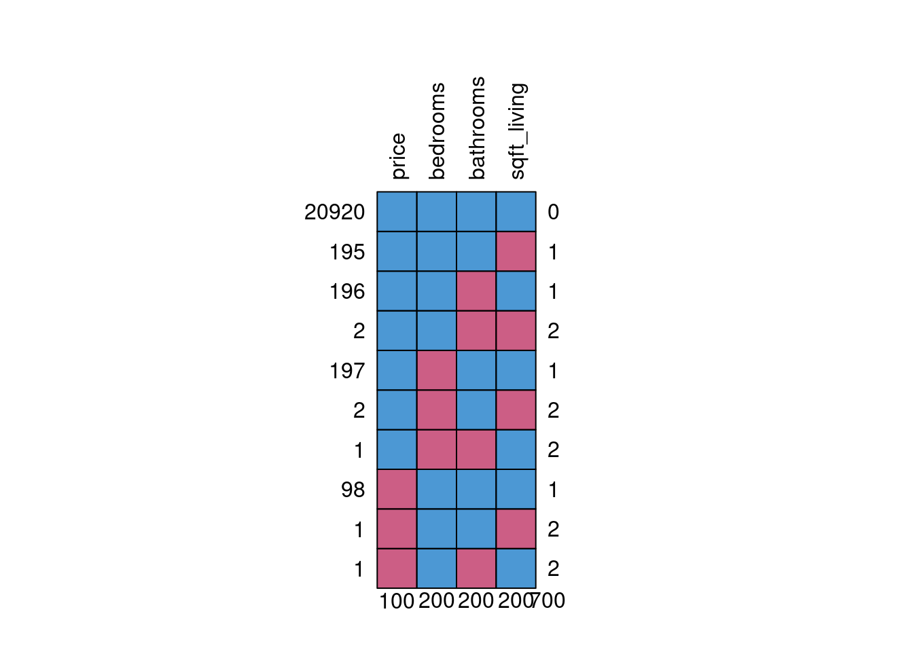

Code
#loading packages
library(DiagrammeR)Missing data occurs when there are missing values in a dataset. There are many reasons why this occurs. It can be intentional or unintentional and can be classified into the following three categories, otherwise known as missingness mechanisms (Mainzer et al. 2023):
Missing completely at random (MCAR) is the probability of missing data being completely independent of any other variables.
Missing at random (MAR) is the probability of missing data being related to the observed values.
Missing not at random (MNAR) is the probability of missing data being dependent on the missing and observed values.

Figure 1: Graphical Representation of Missingness Mechanisms (Schafer and Graham 2002)
(X are the completely observed variables. Y are the partly missing variables. Z is the component of the cause of missingness unrelated to X and Y. R is the missingness.)
Looking for patterns in the missing data can help us to determine to which category they belong. These mechanisms are important in determining how to handle the missing data. MCAR would be the best case scenario but seldom occur. MAR and MNAR are more common.
The problem with ignoring any missing values is that it does not give a true representation of the dataset and can lead to bias when analyzing. This reduces the statistical power of the analysis (van_Ginkel et al. 2020). To enhance the quality of the research, the following should be followed: explicitly acknowledge missing data problems and the conditions under which they occur and employ principled methods to handle the missing data (Dong and Peng 2013).
There are three types of methods to deal with missing data, the likelihood and Bayesian method, weighting methods, or imputation methods (Cao et al. 2021). Missing data can also be handled by simply deleting.
Listwise deletion is when the entire observation is removed from the dataset. Deleting missing data can lead to the loss of important information regarding your dataset and is therefore not recommended. In certain cases, when the amount of missing data is small and the type is MCAR, listwise deletion can be used. There usually won’t be bias but potentially important information may be lost.
T-tests and chi-square tests can be used to assess pairs of predictor variables to determine whether the groups’ means differ significantly. According to (van_Ginkel et al. 2020), if significant, the null hypothesis is rejected, therefore, indicating that the missing values are not randomly scattered throughout the data. This implies that the missing data is MAR or MNAR. Conversely, if nonsignificant, this implies that the data cannot be MAR. This does not eliminate the possibility that it is not MNAR–other information about the population is needed to determine this. Whenever missing data is categorized as MAR or MNAR, listwise deletion would be wasteful, and the analysis biased. Alternate methods of dealing with the missing data is recommended: either pairwise deletion or imputation.
Pairwise deletion is when only the missing variable of an observation is removed. It allows more data to be analyzed than listwise deletion but limits the ability to make inferences of the total sample. For this reason, it is recommended to use imputation to properly deal with missing data.
Imputation is the method of replacing missing data with an estimate obtained from the original, available data so there is a full data set to analyze. To improve statistical power, the number of imputations created should be at least equal to the percent of missing data (5% equals 5 imputations, 10% equals 10 imputations, 20% equals 20 imputations, etc.) (Pedersen et al. 2017). There are two types of imputation: single and multiple.
Single, or univariate, imputation is when only one estimate is used to replace the missing data. Methods of single imputation include using the mean, the last observation carried forward, and random imputation. The following is a brief explanation of each:
Using the mean to replace a missing value is a straight-forward process. The mean of the dataset is calculated, including the missing value. The mean is then multiplied by the number of observations in the study. Next, the known values are subtracted from the product, and this gives an estimate that can be used for any missing values. The problem with this method is that it reduces the variance which leads to a smaller confidence interval.
Last Observation Carried Forward (LOCF) is a technique of replacing a missing value in longitudinal studies with a previously observed value (the most recent value is carried forward) (Streiner 2008). The problem with this method is that it assumes that the previous observed value is perpetual when in reality that most likely is not the case.
Random imputation is a method of randomly drawing an observation and using that observation for any of the missing values. The problem with this method is that it introduces additional variability.
These single imputation methods are flawed. They often result in underestimation of standard errors or too small p-values (Dong and Peng 2013), which can cause bias in the analysis. Therefore, multiple imputation is the better method because it handles missing data better and provides less biased results.
Multiple, or multivariate, imputation is when various estimates are used to replace the missing data by creating multiple datasets from versions of the original dataset. It can be done by using a regression model, or a sequence of regression models, such as linear, logistic and Poison. A set of m plausible values are generated for each unobserved data point, resulting in m complete data sets (Dong and Peng 2013). The new values are randomly drawn from predictive distributions either through joint modeling (JM, which is not used much anymore) or fully conditional specification (FCS) (Wongkamthong and Akande 2023). It is then analyzed and the results are combined to obtain a single value for the missing data.
The purpose of multiple imputation is to create a pool of imputed data for analysis, but if the pooled results are lacking, then multiple imputation should not be done (Mainzer et al. 2023). Another reason not to use multiple imputation is if there are very few missing values; there may be no benefit in using it. Also worth noting is some statistical analyses software already have built-in features to deal with missing data.
Multiple imputation by chained methods, otherwise known as MICE, is the most common and preferred, method of multiple imputation (Wulff and Jeppesen 2017). It provides a more reliable way to analyze data with missing values. For this reason, this paper will focus on the methodology and application of the MICE process.
#loading packages
library(DiagrammeR)Figure 2: Flowchart of the MICE-process based on procedures proposed by Rubin (Wulff and Jeppesen 2017)
DiagrammeR::grViz("digraph {
# initiate graph
graph [layout = dot, rankdir = LR, label = 'The MICE-Process\n\n',labelloc = t, fontcolor = DarkSlateBlue, fontsize = 45]
# global node settings
node [shape = rectangle, style = filled, fillcolor = AliceBlue, fontcolor = DarkSlateBlue, fontsize = 35]
bgcolor = none
# label nodes
incomplete [label = 'Incomplete data set']
imputed1 [label = 'Imputed \n data set 1']
estimates1 [label = 'Estimates from \n analysis 1']
rubin [label = 'Rubin rules', shape = diamond]
combined [label = 'Combined results']
imputed2 [label = 'Imputed \n data set 2']
estimates2 [label = 'Estimates from \n analysis 2']
imputedm [label = 'Imputed \n data set m']
estimatesm [label = 'Estimates from \n anaalysis m']
# edge definitions with the node IDs
incomplete -> imputed1 [arrowhead = vee, color = DarkSlateBlue]
imputed1 -> estimates1 [arrowhead = vee, color = DarkSlateBlue]
estimates1 -> rubin [arrowhead = vee, color = DarkSlateBlue]
incomplete -> imputed2 [arrowhead = vee, color = DarkSlateBlue]
imputed2 -> estimates2 [arrowhead = vee, color = DarkSlateBlue]
estimates2-> rubin [arrowhead = vee, color = DarkSlateBlue]
incomplete -> imputedm [arrowhead = vee, color = DarkSlateBlue]
imputedm -> estimatesm [arrowhead = vee, color = DarkSlateBlue]
estimatesm -> rubin [arrowhead = vee, color = DarkSlateBlue]
rubin -> combined [arrowhead = vee, color = DarkSlateBlue]
}")There are other methods of imputation worth noting and are briefly descrbied below.
Regression Imputation is based on a linear regression model. Missing data is randomly drawn from a conditional distribution when variables are continuous and from a logistic regression model when they are categorical (van_Ginkel et al. 2020).
Predictive Mean Matching is also based on a linear regression model. The approach is the same as regression imputation when it comes to categorical missing values but different for continuous variables. Instead of random draws from a conditional distribution, missing values are based on predicted values of the outcome variable (van_Ginkel et al. 2020).
Hot Deck (HD) imputation is when a missing value is replaced by an observed response of a similar unit, also known as the donor. It can be either random or deterministic (based on a metric or value) (Thongsri and Samart 2022). It does not rely on model fitting.
Stochastic Regression (SR) Imputation is an extension of regression imputation. The process is the same but a residual term from the normal distribution of the regression of the predictor outcome is added to the imputed value (Thongsri and Samart 2022). This maintains the variability of the data.
Random Forest (RF) Imputation is based on machine learning algorithms. Missing values are first replaced with the mean or mode of that particular variable and then the dataset is split into a training set and a prediction set (Thongsri and Samart 2022). The missing values are then replaced with predictions from these sets. This type of imputation can be used on continuous or categorical variables with complex interactions.
Multiple Imputation by Chained Equations (MICE)
In multiple imputation, m imputed values are created for each of the missing data and result in m complete datasets. For each of the m datasets, an estimate of \(\theta\) is acquired.
Combined estimator of \(\theta\) is given by:
\({\hat{\theta}}_{M}\)=\(\displaystyle \frac{1}{M}\)\(\sum_{m = 1}^{M} {\hat{\theta}}_{m}\)
The proposed variance estimator of \({\hat{\theta}}_{M}\) is given by:
\({\hat{\Phi}}_{M}\) = \({\overline{\phi}}_{M}\)+(1+\(\displaystyle \frac{1}{M}\))B\(_{M}\)
where \({\overline{\phi}}_{M}\) = \(\displaystyle \frac{1}{M}\)\(\sum_{m = 1}^{M}\)\({\hat{\phi}}_m\)
and B\(_{M}\) = \(\displaystyle \frac{1}{M-1}\)\(\sum_{m = 1}^{M}\)(\({\hat{\theta}}_{m}\)-\({\overline{\theta}}_{M}\))\(^{2}\)
# credit[is.na(credit) | credit=="Inf"] = NA
# lm(Amount ~ Seniority + Home + Time + Age + Marital + Records + Job + Expenses + Income + Assets + Debt + Seniority + Price, data = credit)
# credit_model = lm(formula = Amount ~ Seniority + Home + Time + Age + Marital + Records + Job + Expenses + Income + Assets + Debt + Seniority + Price, data = credit)The chained equation process has the following steps (Azur et al. 2011):
Using simple imputation, replace the missing data with this value, referred to as the “place holder”.
The “place holder” values for one variable are set back to missing.
The observed values from this variable (dependent variable) are regressed on the other variables (independent variables) in the model, using the same assumptions when performing linear, logistic, or Poison regression.
The missing values are replaced with predictions “m” from this newly created model.
Repeat Steps 2-4 for each variable that have missing values until all missing values have been replaced.
Repeat Steps 2-4, updating imputations each cycle for as many “m” cycles/imputations that are required.
Average the estimates across m estimates. Calculate the standard errors and variance of m estimates. Combine using an adjustment term (1+1/m).
# load data
credit = read.csv("credit_data.csv")
# load packages
library(gtsummary)Credit score data
The credit.csv file is from the website of Dr. Lluís A. Belanche Muñoz, by way of a github repository of Dr. Gaston Sanchez. It contains data of 4,454 subjects and stores a combination of continuous, categorical and count values for 15 variables. Of the 15 variables, the “Status” variable contains binomial categorical values of “good” and “bad” to describe the kind of credit score each subject has. One data point is missing an outcome and was removed from the original data.
| Variable | Type | Description |
|---|---|---|
| X | Integer | Count variable indicating the number of subjects. |
| Status | Character | 2-level categorical variable indicating the status of the subject’s credit: good or bad. |
| Seniority | Integer | Count variable indicating the seniority a subject has accumulated over the course of their life. |
| Home | Character | 6-level categorical variable indicating the subject’s relationship to their residential address: rent, owner, parents, priv, other, or ignore. |
| Time | Integer | Count variable showing how many months has elapsed since the subject’s payment deadline without paying their debt full. |
| Age | Integer | Count variable indicating subject’s age (in years). |
| Marital | Character | 5-level categorical variable indicating the subject’s marital status: single, married, separated, divorced, or widow. |
| Records | Character | 2-level categorical variable indicating whether the subject has a credit history record: yes or no. |
| Job | Character | 4-level categorical variable indicating the type of job the subject has: fixed, freelance, partime, or others. |
| Expenses | Integer | Count variable indicating the amount of expenses (in USD) a subject has. |
| Income | Integer | Count variable indicating the amount of income (in thousands of USD) a subject earns annually. |
| Assets | Integer | Count variable indicating the amount of assets (in USD) a subject has. |
| Debt | Integer | Count variable indicating the amount of debt (in USD) a subject has. |
| Amount | Integer | Count variable indicating the amount of money (in USD) remaining in a subject’s bank account. |
| Price | Integer | Count variable indicating the amount of money a subject earns by the end of the month. |
credit %>%
tbl_summary(by = Status,
missing_text = "NA") %>%
add_p() %>%
add_n() %>%
add_overall %>%
modify_header(label ~ "**Variable**") %>%
modify_caption("**Summary of Credit Data**") %>%
bold_labels()| Variable | N | Overall, N = 4,4541 | bad, N = 1,2541 | good, N = 3,2001 | p-value2 |
|---|---|---|---|---|---|
| X | 4,454 | 2,228 (1,114, 3,341) | 2,222 (1,142, 3,366) | 2,232 (1,098, 3,326) | 0.3 |
| Seniority | 4,454 | 5 (2, 12) | 2 (1, 6) | 7 (2, 14) | <0.001 |
| Home | 4,448 | <0.001 | |||
| ignore | 20 (0.4%) | 9 (0.7%) | 11 (0.3%) | ||
| other | 319 (7.2%) | 146 (12%) | 173 (5.4%) | ||
| owner | 2,107 (47%) | 390 (31%) | 1,717 (54%) | ||
| parents | 783 (18%) | 233 (19%) | 550 (17%) | ||
| priv | 246 (5.5%) | 84 (6.7%) | 162 (5.1%) | ||
| rent | 973 (22%) | 388 (31%) | 585 (18%) | ||
| NA | 6 | 4 | 2 | ||
| Time | 4,454 | 48 (36, 60) | 48 (36, 60) | 48 (36, 60) | <0.001 |
| Age | 4,454 | 36 (28, 45) | 34 (27, 42) | 36 (28, 46) | <0.001 |
| Marital | 4,453 | <0.001 | |||
| divorced | 38 (0.9%) | 14 (1.1%) | 24 (0.8%) | ||
| married | 3,241 (73%) | 829 (66%) | 2,412 (75%) | ||
| separated | 130 (2.9%) | 64 (5.1%) | 66 (2.1%) | ||
| single | 977 (22%) | 328 (26%) | 649 (20%) | ||
| widow | 67 (1.5%) | 19 (1.5%) | 48 (1.5%) | ||
| NA | 1 | 0 | 1 | ||
| Records | 4,454 | 773 (17%) | 429 (34%) | 344 (11%) | <0.001 |
| Job | 4,452 | <0.001 | |||
| fixed | 2,805 (63%) | 580 (46%) | 2,225 (70%) | ||
| freelance | 1,024 (23%) | 333 (27%) | 691 (22%) | ||
| others | 171 (3.8%) | 68 (5.4%) | 103 (3.2%) | ||
| partime | 452 (10%) | 271 (22%) | 181 (5.7%) | ||
| NA | 2 | 2 | 0 | ||
| Expenses | 4,454 | 51 (35, 72) | 49 (35, 75) | 52 (35, 68) | 0.8 |
| Income | 4,073 | 125 (90, 170) | 100 (74, 148) | 130 (100, 178) | <0.001 |
| NA | 381 | 217 | 164 | ||
| Assets | 4,407 | 3,000 (0, 6,000) | 0 (0, 4,000) | 4,000 (0, 7,000) | <0.001 |
| NA | 47 | 20 | 27 | ||
| Debt | 4,436 | 0 (0, 0) | 0 (0, 0) | 0 (0, 0) | 0.3 |
| NA | 18 | 13 | 5 | ||
| Amount | 4,454 | 1,000 (700, 1,300) | 1,100 (800, 1,415) | 1,000 (700, 1,250) | <0.001 |
| Price | 4,454 | 1,400 (1,117, 1,692) | 1,423 (1,062, 1,728) | 1,400 (1,134, 1,678) | >0.9 |
| 1 Median (IQR); n (%) | |||||
| 2 Wilcoxon rank sum test; Pearson's Chi-squared test | |||||
As indicated in the table, the data contains NA/missing values. In order to conduct analysis, we need to delete the missing data. We will create a new dataset with the deleted values.
library(dplyr)
Attaching package: 'dplyr'The following objects are masked from 'package:stats':
filter, lagThe following objects are masked from 'package:base':
intersect, setdiff, setequal, unionlibrary(mice)
Attaching package: 'mice'The following object is masked from 'package:stats':
filterThe following objects are masked from 'package:base':
cbind, rbindnew_credit = na.omit(credit)
summary(new_credit) X Status Seniority Home
Min. : 1 Length:4039 Min. : 0.000 Length:4039
1st Qu.:1078 Class :character 1st Qu.: 2.000 Class :character
Median :2189 Mode :character Median : 5.000 Mode :character
Mean :2205 Mean : 8.149
3rd Qu.:3334 3rd Qu.:12.500
Max. :4454 Max. :47.000
Time Age Marital Records
Min. : 6.00 Min. :18.00 Length:4039 Length:4039
1st Qu.:36.00 1st Qu.:28.00 Class :character Class :character
Median :48.00 Median :35.00 Mode :character Mode :character
Mean :46.74 Mean :36.95
3rd Qu.:60.00 3rd Qu.:45.00
Max. :72.00 Max. :68.00
Job Expenses Income Assets
Length:4039 Min. : 35.00 Min. : 6.0 Min. : 0
Class :character 1st Qu.: 35.00 1st Qu.: 90.0 1st Qu.: 0
Mode :character Median : 52.00 Median :125.0 Median : 3000
Mean : 55.83 Mean :141.7 Mean : 5059
3rd Qu.: 74.00 3rd Qu.:170.0 3rd Qu.: 6000
Max. :173.00 Max. :959.0 Max. :200000
Debt Amount Price
Min. : 0.0 Min. : 100 Min. : 105
1st Qu.: 0.0 1st Qu.: 700 1st Qu.: 1116
Median : 0.0 Median :1000 Median : 1400
Mean : 335.2 Mean :1030 Mean : 1450
3rd Qu.: 0.0 3rd Qu.:1300 3rd Qu.: 1678
Max. :21400.0 Max. :4500 Max. :11140 credit_lm = lm(Amount ~ Status + Seniority + Home + Time + Age + Marital + Records + Job + Expenses + Income + Assets + Debt + Price, data=new_credit)415 rows were deleted due to missing values. In order to conduct regression, we must throw away 9.3% of our data because of missingness. We can use the mice package in R to impute the missing values so that we don’t have to discard such valuable information.
It’s a good idea to check distribution before and after imputation to make sure the distribution doesn’t change significantly. When categorical data is missing, the mode can be used for the missing points. If there is a large amount of missing categorical data, then it should be removed and a new category should be used.
# load library
library(mice, warn.conflicts=FALSE)
library(ggplot2)
library(dplyr, warn.conflicts=FALSE)
library(cowplot)
# credit$Amount
#
# ggplot(credit, aes(Amount, fill = credit, color = credit)) +
# geom_histogram(color = "#000000", fill = "#0099F8") +
# ggtitle("Variable distribution") +
# theme_classic() +
# theme(plot.title = element_text(size = 18))
#
# # TRANSFORM TO LONG DATA FOR PLOTS
# credit.Long<- credit %>% pivot_longer(!y, names_to="credit", values_to="score", values_transform=list(score=as.numeric))
#
# # HISTOGRAMS
# ggplot(credit, aes(Amount, fill=credit, color=credit)) +
# geom_histogram(alpha=0.2, breaks=seq(0,5,1)) +
# lemon::facet_rep_wrap(.~credit, nrow=2, labeller="label_both", repeat.tick.labels=T) +
# labs(title="Distributions of Raw Score") +
# theme_bw() +
# theme(legend.position = "none",
# panel.border = element_rect(color = "#8B814C"),
# strip.background = element_rect(fill = "#EAEAD6", color = "#8B814C"),
# strip.text = element_text(color = "#8B814C", size=14),
# plot.background = element_rect(fill = "#FAFAF5"),
# axis.text = element_text(color = "#8B814C"),
# axis.title = element_text(color = "#8B814C", size=14),
# plot.title = element_text(color = "#8B814C", size=14),
# axis.ticks = element_line(color = "#8B814C"))Before imputing the missing data, it is important to check whether the data has a linear relationship. Nonlinear data should be accounted for in the analysis as well as the imputation process. Otherwise, an incorrect statistical model will result. Also, it is a good idea to check the distribution before and after imputing to make sure there are no drastic changes. Also, need to verify the missingess mechanism. Before imputing, you need to determine how many imputations are needed. 3-5 imputations are sufficient, and 10 are more than enough (Wulff and Jeppesen 2017). It is also important to check for anomalies that may occur during imputation. Imputation models may need to be adjusted if the imputed values fall outside the minimum and maximum range of the observed values. More or fewer variables in the imputation model may be needed for these types of anomalies. After imputation compute wald test statistic to test interactions. Always need to disclose method used to replace missing values when analyzing data.
We created 5 datasets with imputed values using the MICE package (Multivariate Imputation by Chained Equations) in R, a statistical programming software. It seamlessly imputes missing values in a dataset by looking at the data from other columns and estimate the best prediction for each missing value.
data <- credit[-c(1,4,7,8,9)]
# summary(data)
md.pattern(data)
Status Seniority Time Age Expenses Amount Price Debt Assets Income
4040 1 1 1 1 1 1 1 1 1 1 0
367 1 1 1 1 1 1 1 1 1 0 1
22 1 1 1 1 1 1 1 1 0 1 1
7 1 1 1 1 1 1 1 1 0 0 2
11 1 1 1 1 1 1 1 0 0 1 2
7 1 1 1 1 1 1 1 0 0 0 3
0 0 0 0 0 0 0 18 47 381 446pMiss <- function(x){sum(is.na(x))/length(x)*100}
apply(data,2,pMiss) Status Seniority Time Age Expenses Income Assets Debt
0.0000000 0.0000000 0.0000000 0.0000000 0.0000000 8.5541087 1.0552313 0.4041311
Amount Price
0.0000000 0.0000000 # apply(data,1,pMiss)The following variables are missing data:
Income NA’s: 381/4454 = 8.6%
Assets NA’s: 47/4454 = 1.1%
Debt NA’s: 18/4454 = 0.4%
We need to determine the missingness mechanism for each. We can do this in R using the mice package. There is a function that will help us determine the pattern of missing data: md.pattern().
4,039 samples are complete
# load library
library(VIM)
aggr_plot <- aggr(data, col=c('navyblue','red'), numbers=TRUE, sortVars=TRUE, labels=names(credit), cex.axis=.7, gap=3, ylab=c("Histogram of missing data","Pattern"))
Variables sorted by number of missings:
Variable Count
Age 0.085541087
Marital 0.010552313
Records 0.004041311
X 0.000000000
Status 0.000000000
Seniority 0.000000000
Home 0.000000000
Time 0.000000000
Job 0.000000000
Expenses 0.000000000marginplot(data[c(1,2)])
methods(mice) [1] mice.impute.2l.bin mice.impute.2l.lmer
[3] mice.impute.2l.norm mice.impute.2l.pan
[5] mice.impute.2lonly.mean mice.impute.2lonly.norm
[7] mice.impute.2lonly.pmm mice.impute.cart
[9] mice.impute.jomoImpute mice.impute.lasso.logreg
[11] mice.impute.lasso.norm mice.impute.lasso.select.logreg
[13] mice.impute.lasso.select.norm mice.impute.lda
[15] mice.impute.logreg mice.impute.logreg.boot
[17] mice.impute.mean mice.impute.midastouch
[19] mice.impute.mnar.logreg mice.impute.mnar.norm
[21] mice.impute.mpmm mice.impute.norm
[23] mice.impute.norm.boot mice.impute.norm.nob
[25] mice.impute.norm.predict mice.impute.panImpute
[27] mice.impute.passive mice.impute.pmm
[29] mice.impute.polr mice.impute.polyreg
[31] mice.impute.quadratic mice.impute.rf
[33] mice.impute.ri mice.impute.sample
[35] mice.mids mice.theme
see '?methods' for accessing help and source code# load libraries
library('mice')
library('tidyverse')
#summary(credit)This contains a subset of the credit data where the rows having missing value.
rows_na = credit[!complete.cases(credit),]
head(rows_na, 10) X Status Seniority Home Time Age Marital Records Job Expenses
30 30 bad 0 <NA> 48 37 single no <NA> 35
114 114 bad 0 owner 36 39 single no freelance 35
144 144 good 40 owner 36 58 married no freelance 75
153 153 good 27 owner 60 59 married no freelance 45
158 158 good 3 owner 48 25 single no freelance 35
177 177 bad 0 rent 60 48 separated yes freelance 35
195 195 bad 0 other 36 48 married yes freelance 45
206 206 good 10 owner 36 45 married yes freelance 60
240 240 good 3 <NA> 24 42 single no fixed 35
241 241 bad 13 rent 24 49 married no freelance 90
Income Assets Debt Amount Price
30 NA NA NA 1500 1850
114 NA 4000 0 1000 1210
144 NA 50000 0 1000 1160
153 NA 11000 0 1100 1300
158 NA 4000 0 1200 1449
177 NA 25300 15500 1200 1257
195 NA 0 0 1600 2053
206 NA 9500 250 750 1138
240 337 NA NA 1300 1624
241 NA 0 0 700 800This shows a matrix where each row corresponds to a missing data pattern in the credit data set.
md.pattern(credit)
X Status Seniority Time Age Records Expenses Amount Price Marital Job Home
4039 1 1 1 1 1 1 1 1 1 1 1 1
366 1 1 1 1 1 1 1 1 1 1 1 1
22 1 1 1 1 1 1 1 1 1 1 1 1
7 1 1 1 1 1 1 1 1 1 1 1 1
8 1 1 1 1 1 1 1 1 1 1 1 1
4 1 1 1 1 1 1 1 1 1 1 1 1
3 1 1 1 1 1 1 1 1 1 1 1 0
2 1 1 1 1 1 1 1 1 1 1 1 0
1 1 1 1 1 1 1 1 1 1 1 0 1
1 1 1 1 1 1 1 1 1 1 1 0 0
1 1 1 1 1 1 1 1 1 1 0 1 1
0 0 0 0 0 0 0 0 0 1 2 6
Debt Assets Income
4039 1 1 1 0
366 1 1 0 1
22 1 0 1 1
7 1 0 0 2
8 0 0 1 2
4 0 0 0 3
3 0 0 1 3
2 0 0 0 4
1 1 1 0 2
1 0 0 0 5
1 1 1 1 1
18 47 381 455In order to perform multiple imputation on categorical data, all string variables must be converted to # factors using as.factor()
credit$Status = as.factor(credit$Status)
credit$Home = as.factor(credit$Home)
credit$Marital = as.factor(credit$Marital)
credit$Records = as.factor(credit$Records)
credit$Job = as.factor(credit$Job)Using the mice() function, 5 (default) multiple imputations for the null values for the credit data # will be generated.
Multiple_Imputation = mice(data = credit, defaultMethod = c("pmm", "logreg", "polyreg", "polr"), set.seed = 1337)
iter imp variable
1 1 Home Marital Job Income Assets Debt
1 2 Home Marital Job Income Assets Debt
1 3 Home Marital Job Income Assets Debt
1 4 Home Marital Job Income Assets Debt
1 5 Home Marital Job Income Assets Debt
2 1 Home Marital Job Income Assets Debt
2 2 Home Marital Job Income Assets Debt
2 3 Home Marital Job Income Assets Debt
2 4 Home Marital Job Income Assets Debt
2 5 Home Marital Job Income Assets Debt
3 1 Home Marital Job Income Assets Debt
3 2 Home Marital Job Income Assets Debt
3 3 Home Marital Job Income Assets Debt
3 4 Home Marital Job Income Assets Debt
3 5 Home Marital Job Income Assets Debt
4 1 Home Marital Job Income Assets Debt
4 2 Home Marital Job Income Assets Debt
4 3 Home Marital Job Income Assets Debt
4 4 Home Marital Job Income Assets Debt
4 5 Home Marital Job Income Assets Debt
5 1 Home Marital Job Income Assets Debt
5 2 Home Marital Job Income Assets Debt
5 3 Home Marital Job Income Assets Debt
5 4 Home Marital Job Income Assets Debt
5 5 Home Marital Job Income Assets DebtShow the imputed values. Columns are imputations, rows are observations
Multiple_Imputation$imp$X
[1] 1 2 3 4 5
<0 rows> (or 0-length row.names)
$Status
[1] 1 2 3 4 5
<0 rows> (or 0-length row.names)
$Seniority
[1] 1 2 3 4 5
<0 rows> (or 0-length row.names)
$Home
1 2 3 4 5
30 other parents other other owner
240 parents parents owner owner owner
1060 parents parents parents parents parents
1677 other ignore owner ignore other
2389 rent rent rent owner parents
2996 parents rent owner other owner
$Time
[1] 1 2 3 4 5
<0 rows> (or 0-length row.names)
$Age
[1] 1 2 3 4 5
<0 rows> (or 0-length row.names)
$Marital
1 2 3 4 5
3319 married married widow married separated
$Records
[1] 1 2 3 4 5
<0 rows> (or 0-length row.names)
$Job
1 2 3 4 5
30 fixed fixed fixed others freelance
912 fixed fixed freelance freelance freelance
$Expenses
[1] 1 2 3 4 5
<0 rows> (or 0-length row.names)
$Income
1 2 3 4 5
30 140 128 148 60 130
114 87 140 122 65 130
144 200 450 250 111 411
153 140 135 210 126 160
158 105 145 105 50 150
177 183 416 905 245 91
195 300 144 119 175 90
206 143 276 150 101 80
241 176 60 115 210 180
242 108 140 250 241 95
278 175 189 136 66 115
318 319 163 163 144 130
330 150 120 67 194 196
333 179 350 100 355 185
335 130 120 200 108 83
356 220 140 95 112 51
360 152 80 108 100 70
394 491 500 350 500 500
404 100 213 67 95 192
422 41 214 318 104 135
439 195 70 325 120 240
444 150 198 50 132 179
462 69 115 90 93 72
469 156 103 160 115 146
479 95 120 107 180 350
481 223 150 250 303 117
483 195 247 164 154 80
485 140 110 90 90 136
496 101 100 150 67 72
498 306 100 125 140 124
505 80 115 95 38 75
567 113 82 110 77 140
572 110 87 60 90 126
582 85 88 51 63 63
648 171 288 300 250 143
653 81 201 78 105 102
667 416 250 905 183 800
675 157 111 390 125 230
678 130 130 254 100 188
699 208 100 154 154 110
708 160 90 300 300 157
714 122 38 115 181 180
716 60 68 90 150 169
733 100 124 112 116 153
734 77 160 120 75 110
746 210 95 135 121 129
777 205 55 105 72 55
781 140 80 151 157 137
785 73 53 250 251 250
804 50 150 150 110 100
824 100 148 105 72 75
865 170 148 130 155 75
866 210 158 136 140 240
880 70 199 106 93 107
889 300 830 310 383 180
906 350 250 428 319 51
912 110 99 80 110 122
942 60 51 56 147 135
952 140 139 154 55 100
989 110 115 195 88 127
1001 147 130 75 72 67
1017 146 157 114 190 318
1039 230 110 256 176 150
1044 137 78 102 192 105
1069 174 120 196 130 130
1100 120 105 135 164 73
1111 90 57 60 61 65
1125 217 120 155 178 200
1168 150 154 150 179 220
1208 245 150 207 157 318
1226 182 190 115 235 160
1250 210 159 202 170 86
1257 260 145 86 130 218
1276 212 150 130 150 145
1281 37 73 95 92 107
1289 200 100 90 100 110
1297 320 240 93 160 93
1307 80 120 146 170 118
1314 80 150 210 130 81
1335 105 120 86 82 340
1364 191 50 100 200 158
1365 74 175 250 190 212
1366 123 117 180 43 187
1392 350 500 491 150 491
1421 155 160 157 350 120
1427 67 189 142 169 138
1433 105 50 65 93 116
1436 204 117 198 61 185
1437 100 176 120 179 69
1441 47 65 142 110 162
1456 70 107 300 97 60
1473 428 70 341 120 320
1509 117 110 150 191 80
1513 87 60 115 139 63
1530 102 25 75 74 83
1535 95 202 155 108 100
1536 257 195 100 400 175
1544 94 87 95 114 110
1549 165 95 157 163 352
1564 71 105 152 112 94
1580 47 135 140 135 83
1583 120 158 102 81 55
1598 120 75 102 190 174
1599 72 137 71 75 125
1619 55 72 115 149 100
1629 110 165 102 130 100
1648 60 120 65 50 92
1662 100 75 146 219 184
1677 100 205 119 247 139
1685 179 260 176 93 110
1722 57 162 218 117 19
1724 199 113 102 121 90
1733 86 60 245 169 58
1741 135 88 136 102 60
1745 185 300 110 138 352
1753 58 80 99 78 90
1762 103 60 108 80 100
1766 210 225 250 62 300
1771 318 107 478 140 149
1798 290 85 167 169 167
1802 491 200 500 491 491
1803 180 200 200 107 425
1807 179 140 116 130 80
1811 130 103 125 79 141
1844 99 109 100 155 225
1851 288 230 200 189 321
1852 110 131 120 139 100
1870 150 114 80 130 193
1872 125 107 90 178 100
1882 175 77 68 78 82
1883 90 90 110 177 168
1893 350 500 200 150 500
1898 178 90 88 133 123
1903 75 40 130 192 100
1907 298 220 300 157 219
1920 103 97 90 135 140
1936 190 265 218 6 290
1946 120 77 150 80 65
1948 118 47 90 94 150
1962 349 187 111 122 65
1963 150 189 333 58 155
1965 150 75 125 120 130
1970 80 320 250 250 300
1972 500 183 491 905 150
1977 300 190 114 135 216
1979 100 166 156 148 220
1980 54 46 51 80 140
1984 99 200 255 240 150
2006 140 80 100 112 189
2016 120 140 240 167 190
2022 122 60 150 42 163
2025 145 341 390 171 210
2042 125 221 166 242 100
2043 160 105 70 180 145
2076 148 159 160 108 57
2077 123 112 203 250 159
2083 130 55 90 158 125
2156 300 175 167 132 200
2157 119 233 96 80 100
2186 161 91 166 136 53
2197 224 72 110 155 68
2205 138 200 160 188 173
2218 140 124 180 143 102
2227 63 70 70 66 51
2233 104 144 141 108 103
2240 155 293 75 152 301
2257 65 128 100 120 164
2280 151 400 300 144 290
2291 80 89 142 240 478
2297 90 130 112 135 66
2304 121 165 88 121 66
2310 157 126 300 200 231
2323 70 67 50 70 103
2331 150 178 241 150 905
2337 110 47 57 93 82
2349 155 225 120 251 464
2365 62 301 145 100 214
2369 217 105 104 100 137
2387 87 167 116 102 47
2396 116 156 169 123 124
2399 125 130 107 210 193
2402 158 250 131 330 120
2404 69 115 67 71 324
2437 250 250 257 257 300
2445 167 47 94 134 115
2446 260 75 140 130 135
2453 164 95 115 58 185
2460 102 150 100 110 59
2467 66 85 80 60 59
2473 80 130 67 73 126
2490 42 56 37 40 35
2495 137 70 94 40 63
2505 130 70 210 168 200
2566 120 64 95 125 116
2572 79 138 265 122 200
2578 250 44 65 254 350
2584 130 103 85 27 67
2596 102 38 74 140 105
2605 60 122 50 110 50
2614 165 165 110 97 233
2624 81 180 187 79 95
2625 80 300 265 126 265
2631 90 116 138 247 159
2632 142 130 88 105 254
2651 78 122 222 105 210
2652 99 98 166 57 72
2653 240 110 88 300 125
2668 112 160 162 184 125
2676 695 169 189 96 250
2681 85 115 103 100 52
2683 124 162 25 228 64
2695 125 141 96 116 145
2696 126 92 105 87 81
2707 80 111 120 125 80
2720 160 130 125 300 100
2723 169 47 106 45 166
2725 555 175 146 715 92
2730 70 88 120 128 200
2769 86 69 51 60 55
2780 45 53 42 56 60
2781 176 319 125 175 99
2802 140 178 72 111 120
2805 200 100 107 105 100
2806 148 72 73 150 126
2807 159 155 132 200 176
2810 144 87 106 92 140
2813 120 148 105 110 71
2815 50 195 64 60 70
2825 125 301 72 197 170
2854 300 120 166 166 187
2869 123 185 92 157 92
2882 87 150 95 91 75
2884 106 65 133 64 173
2893 142 145 107 107 86
2915 200 150 161 120 68
2927 150 42 132 27 250
2935 120 79 125 102 103
2936 170 110 300 162 100
2939 202 105 160 134 133
2951 416 905 300 300 250
2954 143 532 220 180 143
2969 133 170 123 180 150
2971 67 65 203 175 166
2979 183 143 120 50 208
2983 200 108 150 142 102
2991 100 53 126 60 190
2996 105 155 99 76 250
2999 100 140 191 150 183
3008 220 959 220 400 325
3014 225 67 60 87 140
3021 114 102 92 110 160
3026 92 105 57 150 170
3031 77 71 75 30 71
3038 56 56 48 121 82
3040 68 58 145 301 200
3069 100 77 173 109 210
3080 80 57 43 96 75
3096 121 102 145 100 114
3104 95 105 50 55 70
3106 149 293 85 129 193
3110 233 394 146 125 235
3121 90 92 67 129 314
3123 146 130 85 84 115
3139 350 300 133 373 373
3167 90 124 120 188 144
3170 43 100 233 122 111
3183 120 120 182 131 99
3185 80 250 180 50 186
3187 103 106 85 125 90
3203 59 250 16 105 98
3218 140 105 155 90 120
3222 150 67 130 150 177
3229 250 100 170 130 120
3233 150 128 148 500 204
3237 112 145 200 107 150
3245 72 87 85 121 148
3252 63 121 172 200 78
3266 88 260 125 200 110
3286 68 80 60 133 131
3288 66 69 242 140 101
3304 241 178 241 178 200
3310 130 72 210 250 117
3316 100 115 256 136 180
3325 66 100 136 70 98
3336 155 158 150 165 61
3338 178 416 905 800 800
3345 142 135 470 146 400
3352 86 140 224 300 137
3365 143 187 169 72 60
3382 100 168 180 19 135
3433 137 77 130 73 55
3439 50 102 131 70 100
3451 106 77 59 51 93
3452 135 161 80 59 77
3454 178 120 100 100 80
3456 115 155 110 47 101
3461 150 100 122 40 419
3462 72 75 126 78 148
3473 200 230 131 69 115
3477 225 105 113 60 122
3478 217 161 230 155 130
3494 89 63 65 80 111
3513 148 110 147 115 164
3523 87 150 135 93 138
3525 291 296 85 112 138
3534 240 173 350 315 180
3556 117 46 298 500 20
3641 325 250 110 90 224
3645 43 148 152 125 69
3657 93 80 108 120 219
3674 110 63 30 87 100
3679 205 75 160 202 100
3691 200 42 100 310 76
3704 130 140 139 160 125
3709 163 220 165 54 217
3714 175 75 99 45 147
3717 95 99 219 45 219
3730 77 100 92 86 205
3740 90 85 65 100 80
3763 139 45 81 85 53
3768 78 160 114 150 181
3773 292 364 250 65 195
3794 24 167 73 200 178
3800 113 72 67 70 210
3823 105 130 250 90 100
3825 67 67 53 33 33
3850 100 150 164 280 117
3855 86 122 165 40 185
3857 60 72 92 88 108
3858 131 45 58 71 80
3882 75 233 175 72 160
3887 139 110 178 135 112
3892 75 190 115 174 150
3902 121 145 240 69 203
3914 93 78 92 107 130
3928 531 233 143 300 230
3932 165 72 82 227 155
3945 247 72 80 90 91
3946 72 160 150 150 50
3947 42 49 56 82 80
3951 124 120 70 218 59
3955 150 137 80 58 123
3966 63 130 65 113 80
3992 100 203 82 126 127
4003 180 160 100 105 134
4023 117 140 125 196 130
4036 63 100 175 55 60
4049 53 121 67 48 45
4064 147 200 60 103 345
4069 150 300 170 350 85
4076 66 121 121 67 67
4082 280 122 87 50 436
4085 220 150 172 260 700
4096 110 155 208 167 150
4119 67 110 73 99 80
4159 280 142 170 105 194
4168 64 72 110 95 122
4173 335 62 145 100 104
4181 120 100 162 83 134
4191 110 132 165 101 180
4198 175 117 180 315 217
4199 132 107 150 125 156
4222 151 195 139 110 68
4223 114 114 74 60 120
4237 189 144 250 120 125
4246 81 160 194 93 75
4247 158 107 72 75 150
4256 158 225 200 172 158
4281 115 73 152 50 80
4295 54 100 102 115 134
4333 70 115 45 92 87
4349 170 157 110 90 60
4368 48 92 92 72 205
4373 180 117 147 90 159
4398 155 110 199 224 300
4411 260 251 250 86 424
4420 491 150 500 491 200
4433 115 93 215 225 169
4436 80 163 92 101 253
4440 70 125 102 120 82
4441 150 167 140 200 157
$Assets
1 2 3 4 5
30 3000 0 0 0 9500
240 10000 3500 0 12000 30000
735 7000 7500 65000 7000 24000
1060 15000 0 0 0 0
1129 4500 0 12000 5000 4000
1670 0 3500 2500 2700 0
1677 4000 5500 3000 12000 3000
1812 0 8500 9500 6500 10000
1845 0 0 0 0 0
1878 0 0 0 0 0
1893 23000 100000 23000 90000 100000
2074 0 15000 4000 4000 0
2237 0 0 9000 0 0
2291 9000 5000 93000 12000 15000
2368 0 5000 0 3500 1500
2389 6200 0 0 4000 0
2439 0 0 0 0 0
2449 2000 2500 10000 25000 4000
2473 14000 1500 4000 2500 0
2530 19000 13000 4500 7500 15000
2653 110000 70000 13000 7000 3000
2720 4500 21000 8000 3572 3000
2772 4000 4000 0 3000 7000
2857 3500 3000 0 3000 4000
2951 200000 20000 6000 35000 35000
2996 5000 3500 0 4500 13500
3053 0 4500 3000 4000 4000
3183 5000 250000 5000 10000 9500
3196 13000 0 6000 11500 80000
3218 11000 4500 7000 800 2500
3229 24000 60000 250000 0 4000
3330 0 0 0 2500 5000
3440 7000 8000 4000 17000 9000
3549 0 0 5000 0 3000
3647 10000 3000 4000 13000 6000
3652 0 0 0 1500 0
3661 5000 2500 5500 6500 4000
3821 15000 0 5500 7000 20000
4035 3500 4000 3000 8500 3000
4074 0 60000 15000 4000 11000
4111 4000 4000 10000 4500 4000
4119 2000 7000 23000 12000 11000
4168 5000 3500 10000 9500 15000
4187 2000 2000 0 0 0
4192 5000 4000 5000 3000 5000
4288 0 0 8000 7000 0
4446 6000 23000 5000 0 10000
$Debt
1 2 3 4 5
30 0 0 0 0 0
240 0 0 1379 0 4000
1060 0 0 0 0 0
1677 0 0 0 450 0
1812 0 0 0 0 0
1845 0 0 0 0 0
1878 0 400 0 0 0
1893 1500 0 0 0 3000
2074 0 0 200 0 0
2237 0 0 0 0 0
2389 0 0 0 0 0
2449 0 0 0 0 0
2653 0 0 0 1900 0
2951 0 0 0 2000 0
2996 0 0 0 0 1600
3218 2000 0 4000 2000 0
4074 0 0 0 0 0
4288 0 0 0 0 0
$Amount
[1] 1 2 3 4 5
<0 rows> (or 0-length row.names)
$Price
[1] 1 2 3 4 5
<0 rows> (or 0-length row.names)# loading packages
library(tidyverse)
library(ggplot2)
library(ggfortify)
# library(knitr)
# library(ggthemes)
# library(ggrepel)
# library(dslabs)# model1=lm(Amount~Status+Seniority+Home+Time+Age+Marital+Records+Job+Expenses+Income+Assets+Debt+Price, data=credit)
# autoplot(model1)
#
# ggplot1 = credit %>% ggplot(mapping = aes(x=population/10^6, y=total))
#
# ggplot1 + geom_point(aes(col=region), size = 4) +
# geom_text_repel(aes(label=abb)) +
# scale_x_log10() +
# scale_y_log10() +
# geom_smooth(formula = "y~x", method=lm,se = F)+
# xlab("Populations in millions (log10 scale)") +
# ylab("Total number of murders (log10 scale)") +
# ggtitle("US Gun Murders in 2010") +
# scale_color_discrete(name = "Region")+
# theme_wsj()In conclusion, missing data can occur in research for a variety of reasons. It is never a good idea to ignore it. Doing this will lead to biased estimates of parameters, loss of information, decreased statistical power, and weak reliability of findings (Dong and Peng 2013). The best course of action is to impute the missing data by using multiple imputation. When missing data is discovered, it is important to first identify it and look for missing data patterns. Next, define the variables in the dataset that are related to the missing values that will be used for imputation. Create the necessary number of complete data sets. Run the models and combine them using the imputed values, and finally, analyze the complete dataset. Performing these steps will minimize the adverse effects caused by missing data on the anaylsis (Pampka, Hutcheson, and Williams 2016).